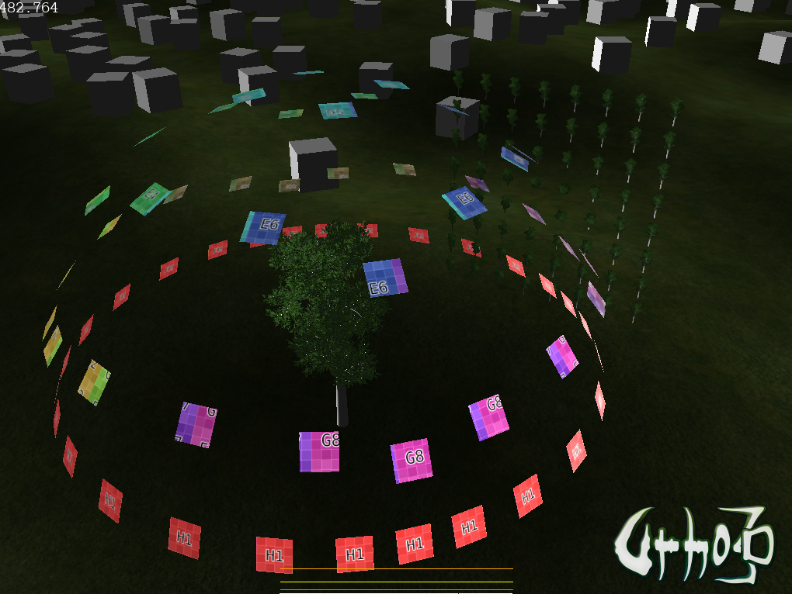
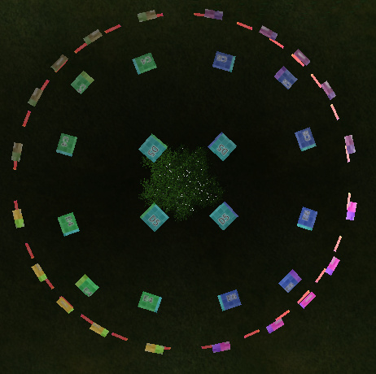

johnnycable
Octahedral impostors. I want them. Whatever the cost.
Don’t even know what they are. Doesn’t matter.
Please move them top of the list.

Octahedral impostors. I want them. Whatever the cost.
Don’t even know what they are. Doesn’t matter.
Please move them top of the list.

Is that a self-assignment? 
I like impostors. People who cheat other people. Ah-a. Like in politics.
Thou I must admit I can’t figure how octahedral ones might be… 
I imagine they would have eight faces.
Ah. I’ve got it. They can cheat 8x the people that a normal guy can cheat… powerful…
EDIT: Looks like some are detained here

Started working on impostors. Right now it’s only a one sprite impostor.
Looking at https://gamedev.stackexchange.com/questions/169508/octahedral-impostors-octahedral-mapping answer here I hope I can easily make it octahedral impostor. A bit troubling though how bad does it look right now 
Either I didn’t understand it correctly, or math is wrong somehow…
Trying to make pyramid impostors, not getting expected result (see next pic)
Wish I had any math skills.
Any ideas would be much appreciated (error is in UVtoPyramid() as far as I understand)
looks like I got it figured out:

// EDIT: actually, I didn’t figure it out, but just rewrote UVtoPyramid function from scratch, with much simpler approach…
EDIT2: Turned out the stackoverflow solution is not actually working.
Found one that works, but can’t invert the calculation.
Here’s how I do it:
// input coordinates are ranged from -1..1, not 0..1
Vector3 UVtoPyramid(Vector2 uv) {
float leftright_negation = 1 - std::abs(uv.x_);
float frontback_negation = 1 - std::abs(uv.y_);
float up = std::min(leftright_negation, frontback_negation);
Vector3 position (uv.x_, up, uv.y_);
return position.Normalized();
}
But finding inverse of this calculation turns out to be pretty hard for me.
Tried this https://gist.github.com/pyalot/cc7c3e5f144fb825d626 gist (normalToUvRectOct()), but it didn’t work for me.
If anyone has any other ideas, please help ^^. I’m stuck, and will do a break until something pops…

I would begin by remapping the Signed NDC input coord (-1 to +1) to the Unsigned NDC coord (0 to 1)
coord = (coord+1) / 2
using abs loses the sign, its a bad start
Wouldn’t that simply be Vector2(position.x_, position.z_) or something similar?
@Leith the code shown works fine, but I need to find the opposite (which would be PyramidToUV), so that I can type it into shader to switch the coordinate depending on the camera position

@Modanung if we look from above, the capture points look like this:

It’s a good start though, so now I just can try to start approximating the value from (.x_, .z_) and some non-linear relation to the .y_ value.
Maybe I’m misunderstanding something, but why would you need the Y value of this Vector3 to determine the uv.xy that went into it?
why would you need the Y value of this Vector3 to determine the uv.xy
I don’t understand the exact question tbh… The coordinates created are simply a pyramid shape, and if you normalize every point, it becomes a sphere.
When later I need to inverse this calculation, I only need to find out which part of the UV grid belongs to each normal. So that when camera faces the object, I find the normal pointing from object to camera and calculate which part of the UV grid to show on the impostor billboard object.
I thought you were making a pyramid. 
I thought you were making a pyramid.
Well, I need to normalize it so that I capture the object from equal distances on every angle.
Good news everyone btw! I found acceptable approximation. The math looks to be expensive so I’m open for other options, but for now I can move on to implementing shader and getting actual impostor working
It’s kinda embarrasing how they are calculated right now…
float calc_simple_square_stretching(float x, float y) {
// https://arxiv.org/ftp/arxiv/papers/1509/1509.06344.pdf
// page 3, Disc to square mapping:
if (sqr(x) >= sqr(y)) {
return sign(x) * (std::sqrt(sqr(x) + sqr(y)));
}
return sign(y) * x / y * (std::sqrt(sqr(x) + sqr(y)));
}
// returns -1..1 coordinates
Vector2 PyramidUV(Vector3 direction, float num_tiles) {
Vector3 dir = direction.Normalized();
Vector2 uv;
uv.x_ = calc_simple_square_stretching(dir.x_, dir.z_);
uv.y_ = calc_simple_square_stretching(dir.z_, dir.x_);
return uv / (1 + dir.y_) * num_tiles / (num_tiles + 1.f);
}
// and then after I adjust it from (-1..1) to (0..1) I need even
// more voodo to make them work :D
float uv_incr = 1.f / ((float)impostorResolution);
Vector2 uv_base =
PyramidUV(position, impostorResolution) / 2.f
+ Vector2(0.5f - uv_incr / 2.f, 0.5f - uv_incr / 2.f) ;So, trying to write a shader for impostor, turned out to be harder than I though… Used LitSolid.glsl as a starting point. Not using Billboard technique yet.
+#ifndef COMPILEVS
+varying vec3 cCameraPos; // had to add this myself so that I could use cCameraPos
+#endif
+vec2 getPyramid(vec2 uv, vec3 worldPos)
+{
+ float tile_res = 8.0; // hardcoded atlas resolution
+
+ // here expecting worldPos to be root position of the object
+ // and cCameraPos to be camera position (both in world transform space)
+ vec3 dir = normalize((worldPos - cCameraPos).xyz);
+
+ // from now on calculations are done line by line for simplier debugging
+ float uv_incr = 1.0 / tile_res;
+
+ vec2 ret = normalize(vec2(dir.x, dir.z));
+ ret = ret / (1.0 + dir.y);
+ ret = ret * tile_res/(tile_res + 1.0);
+
+ float adj = 0.5 - uv_incr / 2.0;
+ ret = ret / 2.0 + vec2(adj, adj);
+
+ return uv / tile_res + ret;
+}
+
void VS()
{
mat4 modelMatrix = iModelMatrix;
vec3 worldPos = GetWorldPos(modelMatrix);
gl_Position = GetClipPos(worldPos);
vNormal = GetWorldNormal(modelMatrix);
vWorldPos = vec4(worldPos, GetDepth(gl_Position));
@@ -59,7 +87,8 @@ void VS()
- vTexCoord = GetTexCoord(iTexCoord);
+ // here assuming that iTexCoord is our per-vertex UV coordinates, like (0, 0) ... (1, 1)
+ vTexCoord = GetTexCoord(getPyramid(iTexCoord, GetWorldPos(cModel)));
Yet on the output I get some distorted image on the plane, and for some reason texture is not being tiled (which I am assuming is default behavior). All that makes me thing that some part of these calculations is actually done in screen space, not in world space.
If anything of it makes sense to anyone, please let me know where my mistakes are.
TBH, I’ve got lost some posts ago… so I hope you’re on the right track.
Hail Impostors!
I am probably lost more than you tbh…  @johnnycable
@johnnycable
https://youtu.be/iDckH-nbq1A Here’s current preview.
At least two significant things (probably more) left to be figured out here:
how to make object origin not to dance around when looking from the top
how to make transition smoother
The code is a complete mess right now. It’s hard to underestimate how bad it is. I don’t know whether I should laugh or cry about it…
Most of the stuff happens in C++, and more has to be put into shaders probably.
https://gitlab.com/fiasco/urhoworlds/tree/impostors/src (see Impostor.{c,h}pp). Though I don’t think it’s worth anyone’s time right now, unless you’re ready to rewrite it all from scratch.
The only reason to look at my code is to figure out quick how to use Urho3D capabilities to achieve similar things.
You’re not using the billboard technique yet, but GetWorldNormal(modelMatrix) resolves to GetBillboardNormal(matrix) - which requires a shader uniform called cBillboardRot to be set up !! (looking at the hlsl sourcecode, but anyway…)
There’s a variant you should try: GetBillboardNormal(float4 iPos, float3 iDirection, float4x3 modelMatrix) - this version may suit your current use case better as it does not rely on the aforementioned uniform.
Some more progress. Small steps overall, but big pile of knowledge uncovered on Urho3D <3 and 3D graphics on the way…
Right now code and all the service tools like render paths, shaders and materials are not organized well.
After I complete couple more features and fix all the problems, I try to organize it all properly so that it’s atleast ready to be put into Code Exchange section.

Wow, that looks good. Could definitely be a PR for the engine!
WOW! Great work!
This is exactly what we need to resolve an existing rendering issue (terrible pixel flicker/jitter from far away).
Do you have an ETA for publishing this source code?
Would you like some help?
I checked your September 2019 release here, but it doesn’t seem to have anything you did after that? Your demo from Jan 2020, looks fantastic.
Hi @restless , I see from GitHub that you continued to work on this until around 5/20/2020, which means you might have made more progress beyond your last demo from January 2020.
Are you interested in passing this off now? We’re planning a Civ-like game, with a large map, aimed to provide both a near ground level immersive view, as well as the zoomed out far-view. As we zoom-in/out, we’ll need Impostors to work. The progress you made looks damned good to us, and if there are deficiencies, hopefully are fixable by us.
We may be porting this to C# to work with @elix22 Urho.NET, which is awesome.
Was wondering if you would be available for us to ask questions as we try to get this working for us?